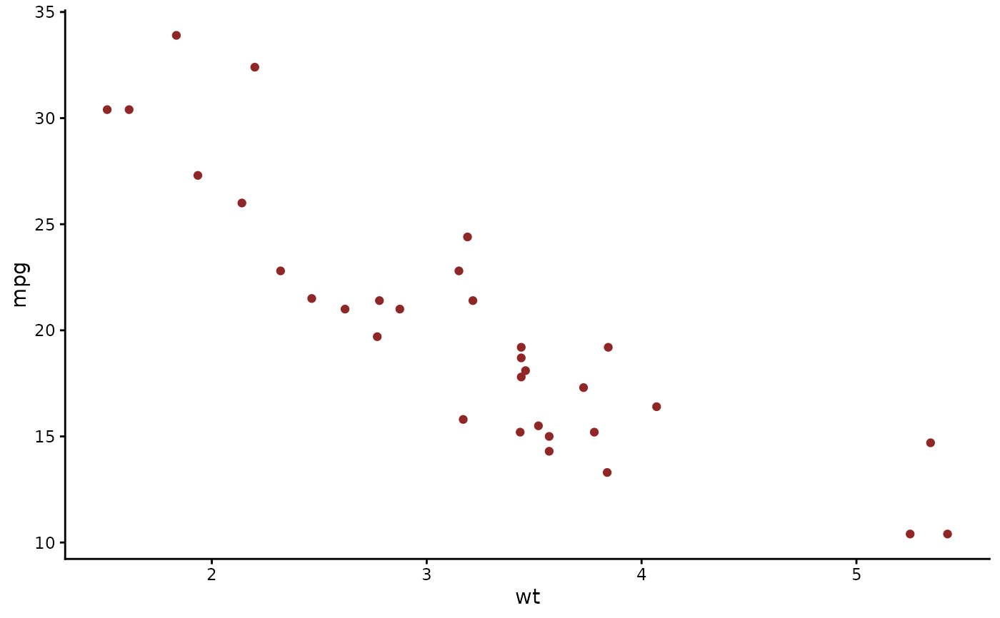

Every figure the package draws uses this theme, including the
figures it draws through bayesplot. It extends
ggplot2::theme_classic(). Apply it to a plot of your own to give it
the look of mvgam output.
mvgam's figures take their colours from the "red" scheme of
bayesplot, which bayesplot::color_scheme_get("red") returns.
The example colours its points with it.
Arguments
- base_size
Base font size in points. Defaults to
11, matchingggplot2::theme_classic().- base_family
Base font family. Defaults to
"", the ggplot2 default.
Value
A ggplot2::theme() object.
Examples
library(ggplot2)
ggplot(mtcars, aes(wt, mpg)) +
geom_point(colour = bayesplot::color_scheme_get("red")$dark) +
mvgam_theme()
